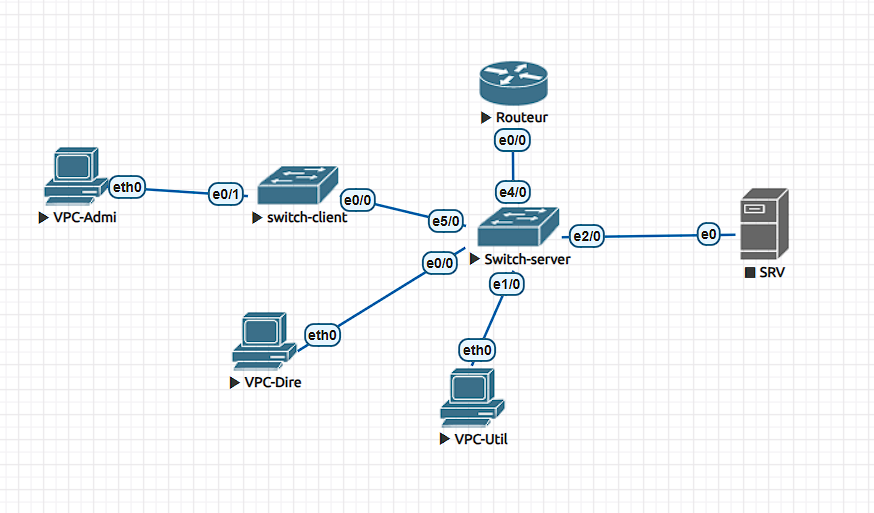
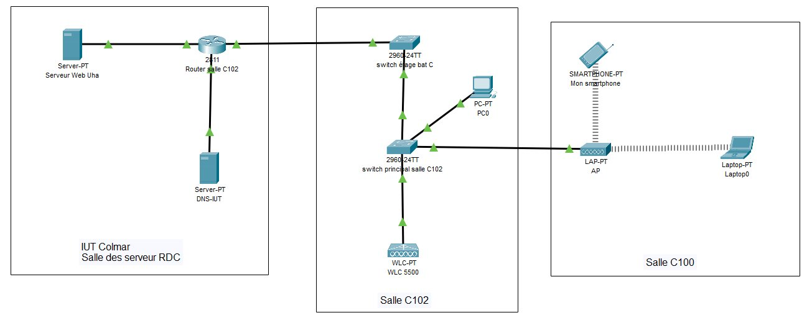
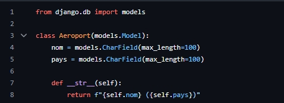
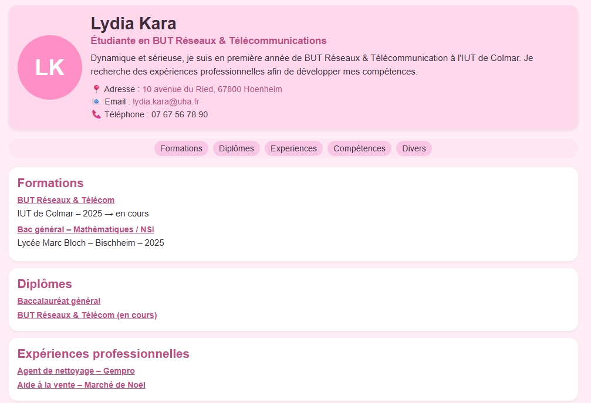

01
Architecture réseau avec EVE-NG
Création d’une architecture réseau avec VLAN, DHCP, routage et tests de connectivité.
Projets
Quelques projets réalisés pendant ma formation, avec des preuves, des compétences et un résumé en anglais.

Création d’une architecture réseau avec VLAN, DHCP, routage et tests de connectivité.

Construction d’un réseau avec segmentation, serveurs Linux et tests réseau.

Étude d’un réseau sans fil, comparaison 2,4 GHz / 5 GHz et optimisation de couverture.

Application web autour de la gestion de données liées au trafic aérien. Travail personnel : CRUD.

Création d’un site vitrine responsive pour présenter mon profil, mes compétences et mes projets.
L'objectif était de concevoir et tester une infrastructure réseau virtuelle représentant une petite entreprise. Le projet devait permettre la mise en oeuvre de VLAN, du routage inter-VLAN et de services réseau afin de garantir la communication entre plusieurs segments du réseau.
J’ai participé à la création de la topologie réseau sous EVE-NG, configuré les VLAN, mis en place le routage ainsi que le service DHCP. J'ai également effectué plusieurs tests afin de vérifier la communication entre les différentes machines virtuelles.
This project was about to design and test a virtual network infrastructure representing a small business. The project was intended to enable the implementation of VLANs, inter-VLAN routing, and network services to ensure communication between multiple network segments.
L'objectif était de concevoir un réseau complet intégrant plusieurs équipements, des serveurs Linux et différents sous-réseaux afin de comprendre les mécanismes de segmentation et d'administration réseau.
J’ai participé à la configuration des équipements réseau, à la mise en place de l'adressage IP, aux tests de connectivité ainsi qu'à l'administration des serveurs utilisés dans la maquette.
This project was to design a comprehensive network incorporating various pieces of equipment, Linux servers, and different subnets in order to understand the mechanisms of network segmentation and administration.
Ce projet avait pour but d'étudier les performances d'un réseau sans fil et comprendre l'influence des paramètres de transmissions sur la qualité de la communication.
J'ai analysé les bandes de fréquence utilisées, j’ai comparé les bandes 2,4 GHz et 5 GHz, comparé les différentes normes. J'ai également observé les performances et proposé des améliorations qui ont permis d'optimiser la couverture Wi-Fi.
This project was to study the performance of a wireless network and to understand how transmission parameters affect communication quality.
Dans le cadre de la SAÉ 2.03, l'objectif était de développer une application web permettant de gérer des aéroports à travers une interface accessible depuis un navigateur. Le projet devait permettre la création, la consultation, la modification et la suppression d'informations tout en utilisant une base de données pour stocker les données de manière structurée.
J'ai développé une application web avec Django permettant de gérer des aéroports grâce aux opérations CRUD (Create, Read, Update, Delete). J'ai participé à la création des pages, à la mise en place des formulaires et à l'affichage des données enregistrées dans la base.
L'application permet d'ajouter un nouvel aéroport, consulter la liste des aéroports, afficher leurs informations détaillées, modifier les données existantes ou encore supprimer un enregistrement. J'ai également travaillé sur la mise en forme de l'interface afin de rendre son utilisation plus simple et plus agréable.
Le projet repose sur une architecture client-serveur. Lorsqu'un utilisateur effectue une action depuis son navigateur, une requête est envoyée au serveur Django. Celui-ci traite la demande, interagit avec la base de données SQLite puis renvoie une réponse affichée dans l'interface web.
Cette organisation permet de séparer l'interface utilisateur, la logique métier de l'application et le stockage des données afin d'obtenir une application plus claire et plus facile à maintenir.
L'image présentée correspond à la classe Aeroport utilisée dans le projet. Cette classe représente le modèle principal de l'application et permet de stocker les informations des aéroports dans la base de données SQLite.
Chaque aéroport possède notamment un identifiant, un nom et un pays. Cette classe constitue le point central des opérations CRUD puisqu'elle permet l'ajout, l'affichage, la modification et la suppression des données depuis l'interface web.
Le développement a été réalisé avec Python et Django. SQLite a été utilisé pour stocker les données tandis que HTML et CSS ont permis de construire l'interface utilisateur. GitHub a servi à sauvegarder et versionner le projet.
This project consisted of developing a web application for airport management using Django. The application allows users to create, view, update and delete airport information stored in a SQLite database. My work focused on implementing CRUD functionalities, creating forms, displaying data and improving the user interface. This project helped me strengthen my skills in web development, database management and collaborative development practices.
Cette SAÉ m'a permis d'approfondir mes connaissances en développement web avec Django ainsi qu'en gestion de bases de données. J'ai appris à concevoir une application dynamique, à manipuler des formulaires, à gérer des données persistantes et à mettre en œuvre concrètement les opérations CRUD dans un projet complet.
Ce projet consistait à créer un site web professionnel permettant de présenter mon parcours, mes compétences dans un site accessible sur ordinateur.
J'ai développé l'interface en HTML et CSS, organisé le contenu des différentes pages et adapté l'affichage aux différents formats d'écran.
This project was to create a professional website designed to showcase my background and skills on a site accessible via a computer.